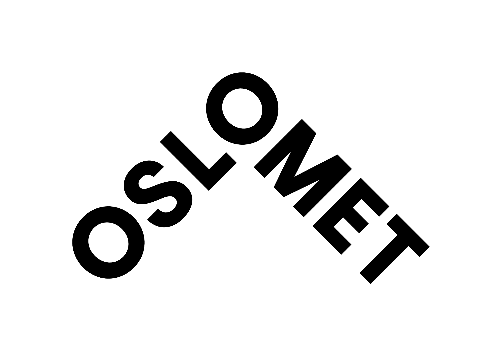

Detaljer om studiets oppbygging.
Undervisningen er en kombinasjon av:
For å gjennomføre studiet på normert tid, må du regne med å bruke om lag 40 timer per uke på studierelatert arbeid gjennom hele semesteret.
Detaljer om studiets oppbygging.
Med dette studiet får du IT-kompetanse som er etterspurt i arbeidslivet, særlig om du velger spesialiseringene vitenskapelige beregninger eller statistiske og datadrevne metoder.
Spesialiseringen i matematikk og fysikk retter seg mer mot videre studier, men også her får du etterspurt kompetanse i arbeidslivet etter bachelorstudiet.
Matematisk modellering og datavitenskap blir stadig viktigere som basisgrunnlag, i for eksempel beregninger knyttet til klima, forsikring og finans, og datadrevne metoder for verdiskaping. Datadrevne metoder og maskinlæring er i dag svært mye brukt i arbeidslivet.
Du kan dra på utveksling i femte semester.
Detaljer om studiets oppbygging.